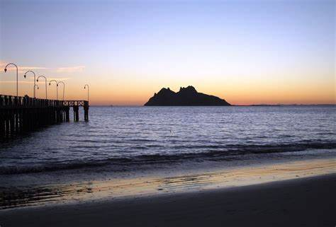
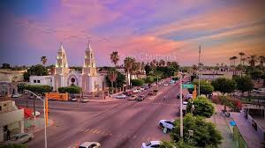
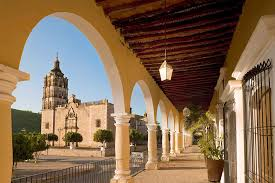

Lugares turisticos
|

Bahía de Kino: Hermosas playas en el Mar de Cortés, perfectas para nadar, pescar y practicar deportes acuáticos. |

Huatabampo: Lugar con historia yaqui, ideal para conocer su cultura y tradiciones. |
|

Alamos: Pueblo mágico con arquitectura colonial y calles empedradas, lleno de historia y arte. |

San Carlos: Playas espectaculares y buen lugar para buceo y pesca deportiva. |